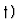
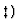

Cancellation Errors in Multivariate Resultant Computation
with Floating-point Numbers 1
Tateaki Sasaki 
and Tomoyuki Sato

Institute of Mathematics and
Master's Program in Education
University of Tsukuba
Tsukuba-shi, Ibaraki 305, Japan
{sasaki,tsato}@math.tsukuba.ac.jp
Full paper in compressed Postscript *.ps.gz
Abstract:
We test five methods of computing resultant of multivariate
polynomials with floating-point number coefficients, mostly from
the viewpoint of numerical errors. The methods tested are
a) Brown-Traub's subresultant PRS algorithm,
b) Collins' algorithm based on polynomial interpolation,
c) minor expansion method of Bezout's determinant,
d) Gaussian elimination method
(Bareiss' algorithm) of Bezout's determinant, and
e) efficient Gaussian elimination method
(Sasaki-Murao's algorithm) of Bezout's determinant.
We find that method a) causes so large cancellation errors
that it is almost useless practically. The errors caused by
methods b) and d) are not so large as those by a) but still large.
The methods c) and e) are quite safe against the cancellation error
and they are efficient, too. Mechanisms of occurrence of large
cancellation errors in methods a), b) and d) are clarified.
By these, we show that approximate algebraic computation often
causes large cancellation errors hence the error analysis and
development of error-safe algorithms are very important.
IMACS ACA'98 Electronic Proceedings